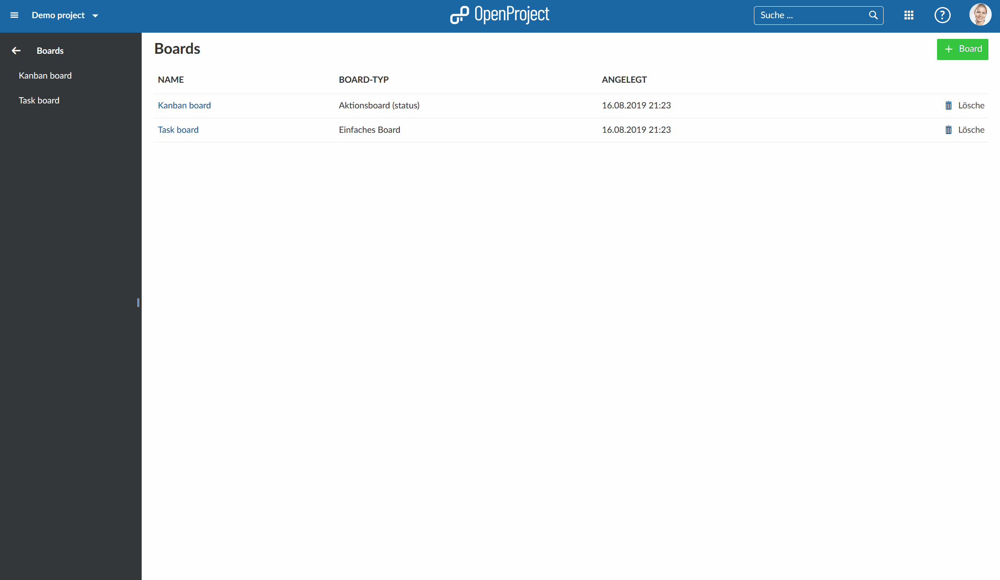

In this document you will get a first introduction to the boards in OpenProject, i.e. how to use a Kanban board to manage your tasks in an agile way.
To find out more about the detailed functionalities of Boards, please visit our user guide for boards.
Agile boards is only one of OpenProject’s features. Find a comprehensive comparison between OpenProject and Trello here.
| Topic | Content |
|---|---|
| What is a Board? | Find out what a Board in OpenProject is. |
| Manage your work in a Board | How to manage your work in an agile Board? |
Agile Boards in OpenProject support teams in their agile project management methodology, e.g. Scrum or Kanban.
You can create as many flexible boards as you want with both lists and cards on it. A list usually represents a workflow, e.g. status or version of a work package. The cards are work packages, e.g. tasks, on this list.
To manage your work in an agile board, open the Boards module in the project menu.
